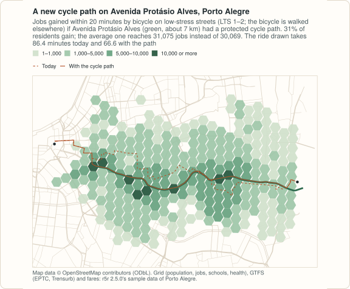

Example: before and after in Porto Alegre¶
A transport plan is a list of changes: a cycle path here, a lane taken
from cars there, a new clinic, a fare rule. Each one asks the same
question twice, before and after. In peabiru the street network is built
once, and the changes, called scenarios, are arguments of each routing
call: new_lts changes the level of traffic stress cyclists meet on chosen
streets, new_carspeeds and carspeed_scale change car speeds by street
or by area, and a fare structure is a dictionary of tables that can be
edited before the call. A new school or clinic is not even a change to the
network: it is one more row among the destinations.
This example asks four such questions of Porto Alegre, on a small sample
of the city, and times each one: a what-if is one routing call
on the network as built, with nothing to edit and rebuild. The code blocks make one script; the output under
each is what it prints, computed on 2026-11-12, and the numbers are those
of the R example, whose
figures are drawn from the same results by site/figures/scenarios.R in
the repository. The fare routing takes a few minutes. It needs
geopandas 1.0 or later.

The data¶
| Data | Source | Licence |
|---|---|---|
| Streets | OpenStreetMap extract of Porto Alegre (poa_osm.pbf) |
ODbL 1.0, © OpenStreetMap contributors |
| Public transport | The EPTC bus and Trensurb train GTFS feeds (poa_eptc.zip, poa_trensurb.zip), cut for the sample: the buses run from 11:20 to 17:50 only, so the analyses below leave at 14:00 on Monday 13 May 2019 |
see below |
| Grid | poa_hexgrid.csv: 1,227 H3 cells (resolution 9) with population, jobs, schools and health facilities; its sources are not documented |
see below |
| Fares | fares/fares_poa.zip, the fare structure of the sample |
see below |
All four are the sample data of Porto Alegre from the r5r project (its
repository at the tag of version 2.5.0), whose licence line is
GPL (>= 3) | MIT + file LICENSE. The
sample also has an elevation raster, left out here: a call with a scenario
routes without slope costs (with a warning), so the before
and the after would not be comparable. The files are downloaded once into
PEABIRU_EXAMPLE_DATA.
import copy
import datetime as dt
import os
import shutil
import time
import urllib.request
from pathlib import Path
import geopandas as gpd
import numpy as np
import pandas as pd
from shapely.geometry import Point
import peabiru
data_dir = Path(os.environ.get("PEABIRU_EXAMPLE_DATA", "example-data")) / "poa"
(data_dir / "network").mkdir(parents=True, exist_ok=True)
(data_dir / "fares").mkdir(exist_ok=True)
url = "https://raw.githubusercontent.com/ipea/r5r/v2.5.0/r-package/inst/extdata/poa/"
for f in ["poa_osm.pbf", "poa_eptc.zip", "poa_trensurb.zip", "poa_hexgrid.csv",
"fares/fares_poa.zip"]:
if not (data_dir / f).exists():
urllib.request.urlretrieve(url + f, data_dir / f)
for f in ["poa_osm.pbf", "poa_eptc.zip", "poa_trensurb.zip"]:
if not (data_dir / "network" / f).exists():
shutil.copy(data_dir / f, data_dir / "network" / f)
def timed(f, *args, **kwargs):
start = time.perf_counter()
out = f(*args, **kwargs)
return out, time.perf_counter() - start
threads = 4 # of this laptop's ten cores
network, build_time = timed(peabiru.build_network, data_dir / "network", n_threads=threads)
print(network.info())
grid = pd.read_csv(data_dir / "poa_hexgrid.csv")
grid[["jobs", "healthcare"]] = grid[["jobs", "healthcare"]].fillna(0) # 5 cells have no count
print(grid[["population", "jobs", "schools", "healthcare"]].sum().astype(int).to_dict())
population = grid.set_index("id")["population"]
def per_resident(table, column="accessibility"):
"""The average of a column of a table with an id column over the residents."""
w = population.loc[table["id"]].to_numpy()
return float(np.average(table[column], weights=w))
osm = gpd.read_file(data_dir / "poa_osm.pbf", layer="lines")
def ways_named(name):
return osm[(osm["name"] == name) & osm["highway"].notna()]
{'vertices': 26880, 'edges': 66652, 'elevation': 'NONE', 'feeds': ['poa_trensurb', 'poa_eptc'], 'stops': 4010, 'patterns': 226, 'services': 118, 'frequencies': False}
{'population': 812935, 'jobs': 337921, 'schools': 194, 'healthcare': 141}
Building the network takes about a second; every call below is timed the same way, on a laptop with ten cores, four of them used, and other work running, so the timings are indications.
A new cycle path¶
A cyclist who rides only on streets of low traffic stress (levels 1 and 2
of four, max_lts=2, the default) walks the bicycle on the others. In this
extract Avenida Protásio Alves, the radial avenue east of the centre, is
level 4 from end to end. What if it had a protected cycle path? The
scenario gives its OpenStreetMap ways level 1:
ways = ways_named("Avenida Protásio Alves")
path = pd.DataFrame({"osm_id": ways["osm_id"].astype("int64"), "lts": 1})
print(len(path))
def jobs_by_bike(**scenario):
return peabiru.accessibility(network, grid, grid, opportunities_colnames="jobs",
mode="BICYCLE", max_lts=2, cutoffs=20, n_threads=threads,
**scenario)
before, t_before = timed(jobs_by_bike)
after, t_after = timed(jobs_by_bike, new_lts=path)
gain = before[["id", "accessibility"]].merge(after[["id", "accessibility"]], on="id",
suffixes=("_before", "_after"))
gainers = gain.loc[gain["accessibility_after"] > gain["accessibility_before"], "id"]
print(round(per_resident(gain, "accessibility_before")),
round(per_resident(gain, "accessibility_after")),
round(population.loc[gainers].sum() / population.sum(), 3))
94
30069 31075 0.312
One ride across it, from the east end of the avenue to the Santa Casa hospital in the centre, before and after:
ends = pd.DataFrame({"id": ["Jardim Carvalho", "Santa Casa"],
"lon": [-51.1405, -51.2224], "lat": [-30.0415, -30.03043]})
monday = dt.datetime(2019, 5, 13, 14, 0)
def ride(**scenario):
return peabiru.detailed_itineraries(network, ends.iloc[[0]], ends.iloc[[1]],
mode="BICYCLE", max_lts=2,
departure_datetime=monday, **scenario)
for when, r in [("today", ride()), ("with the path", ride(new_lts=path))]:
print(when, r["total_duration"].iloc[0], r["total_distance"].iloc[0])
today 86.4 11397
with the path 66.6 9476
Congestion and a closed avenue¶
peabiru's car speeds are free flow: the speed limit of each street, or a default by its class, with no traffic. Two scenarios change that: every street within 2 km of the Mercado Público at half its speed, and Avenida Ipiranga, the east–west arterial along the Dilúvio creek, closed to cars.
# 16 segments per quarter circle, as st_buffer(nQuadSegs = 16) in the R example
centre = gpd.GeoSeries([Point(-51.22781, -30.02756)], crs=4326).to_crs(31982)
slow_centre = gpd.GeoDataFrame({"poly_id": ["centre"], "scale": [0.5], "priority": [1]},
geometry=centre.buffer(2000, quad_segs=16).to_crs(4326))
ipiranga = ways_named("Avenida Ipiranga")
closed = pd.DataFrame({"osm_id": ipiranga["osm_id"].astype("int64"), "max_speed": 0.0,
"speed_type": "km/h"})
def drive(**scenario):
m = peabiru.travel_time_matrix(network, grid, grid, mode="CAR", n_threads=threads,
**scenario)
return m[["from_id", "to_id", "travel_time_p50"]]
base, t_base = timed(drive)
slow, t_slow = timed(drive, new_carspeeds=slow_centre)
shut, t_shut = timed(drive, new_carspeeds=closed)
def change(scenario):
m = base.merge(scenario, on=["from_id", "to_id"], how="left", suffixes=("", "_s"))
after = m["travel_time_p50_s"].astype("float").fillna(120) # no longer within the limit
d = after - m["travel_time_p50"].astype("float")
return float(round(d.mean(), 3)), float(round((d > 0).mean(), 3)), float(d.max())
print(len(base), change(slow), change(shut))
1483605 (0.348, 0.143, 9.0) (0.73, 0.137, 119.0)
Over all 1,483,605 pairs of cells, the slower centre adds 0.35 minutes on average and the closed avenue 0.73 (each scenario slows 14% of the pairs; a pair no longer reached within the two-hour limit counts as 120 minutes): small numbers, because most pairs do not cross either.
Access to health facilities by car, within 10 minutes, on average over the residents:
def health_by_car(**scenario):
a = peabiru.accessibility(network, grid, grid, opportunities_colnames="healthcare",
mode="CAR", cutoffs=10, n_threads=threads, **scenario)
return round(per_resident(a), 2)
print(health_by_car(), health_by_car(new_carspeeds=slow_centre),
health_by_car(new_carspeeds=closed))
35.51 32.35 33.43
And access to public transport by car: with mode=["CAR", "TRANSIT"] a
trip may drive to any stop and board there, or drive all the way. In this
sample the direct drive is always faster, before and after:
some = grid.iloc[::25]
def legs(**scenario):
e = peabiru.expanded_travel_time_matrix(network, some, some, mode=["CAR", "TRANSIT"],
departure_datetime=monday, time_window=1,
n_threads=threads, **scenario)
return (e["routes"] != "[CAR]").value_counts().to_dict()
print(legs(), legs(new_carspeeds=slow_centre))
{False: 2500} {False: 2500}
One more health facility¶
Where would one more health facility bring the most people within 15 minutes' walk? Not a network scenario at all: one walking matrix from every cell to every cell answers it for every candidate site at once.
walk, t_walk = timed(peabiru.travel_time_matrix, network, grid, grid, mode="WALK",
max_trip_duration=60, n_threads=threads)
walk["travel_time_p50"] = walk["travel_time_p50"].astype("float")
def nearest(sites):
w = walk[walk["to_id"].isin(sites)]
return w.groupby("from_id")["travel_time_p50"].min().reindex(grid["id"]) # NaN: none
has = grid.loc[grid["healthcare"] > 0, "id"]
today = nearest(has)
covered = (today <= 15).to_numpy()
row = pd.Index(grid["id"]).get_indexer(walk["from_id"])
w = walk[(walk["travel_time_p50"] <= 15) & ~covered[row]].copy()
w["people"] = population.loc[w["from_id"]].to_numpy()
best = w.groupby("to_id")["people"].sum().sort_values(ascending=False, kind="stable")
print(best.head(3).round().astype(int).to_dict())
def share_15(t):
return round(population[t.index[t <= 15]].sum() / population.sum(), 4)
with_one_more = nearest(pd.concat([has, pd.Series([best.index[0]])]))
print(share_15(today), share_15(with_one_more),
share_15(nearest(grid.loc[grid["schools"] > 0, "id"])))
{'89a90129ca7ffff': 17525, '89a90129d73ffff': 17279, '89a90129dcbffff': 17172}
0.7901 0.8117 0.9468
The best cell is the one the map of the R example marks. The cells are hexagons about 350 m across: the search says where to look for a site, not which plot to buy.
A change in the fare rules¶
The sample fare structure charges R$ 4.80 for a bus and R$ 4.50 for the train; a second bus within an hour brings the pair to R$ 7.20, and only one transfer per trip is discounted. Two edits: every transfer within the hour free (two rides cost the dearer fare, up to two discounted transfers), and no transfer discount at all.
fares = peabiru.read_fare_structure(data_dir / "fares" / "fares_poa.zip")
fare_of = fares["fares_per_type"].set_index("type")["fare"]
free = copy.deepcopy(fares)
t = free["fares_per_transfer"]
t["fare"] = np.maximum(fare_of.loc[t["first_leg"]].to_numpy(), fare_of.loc[t["second_leg"]].to_numpy())
free["max_discounted_transfers"] = 2
none = copy.deepcopy(fares)
none["max_discounted_transfers"] = 0
print(free["fares_per_transfer"])
first_leg second_leg fare
0 BUS BUS 4.8
1 RAIL BUS 4.8
2 BUS RAIL 4.8
The jobs within 45 minutes by public transport, on average over the residents, with one fare to spend and with R$ 7.20, under each structure; with a fare structure the multi-criteria router is used, far slower than the one used without fares. The two are different algorithms and their travel times differ a little, in both directions, so the reference for the budgets is the second row: the multi-criteria router with a budget that never binds. (The difference is that of the two routers, not of this example.)
def jobs_by_transit(**fare_args):
a, seconds = timed(peabiru.accessibility, network, grid, grid,
opportunities_colnames="jobs", mode=["WALK", "TRANSIT"],
departure_datetime=monday, time_window=5, cutoffs=45, seed=42,
n_threads=threads, **fare_args)
return round(per_resident(a)), round(seconds, 1)
rows = {"no fare structure": jobs_by_transit(),
"any budget": jobs_by_transit(fare_structure=fares, max_fare=1000)}
for budget in [4.8, 7.2]:
for name, structure in [("sample", fares), ("free", free), ("none", none)]:
rows[f"{name} {budget:.2f}"] = jobs_by_transit(fare_structure=structure, max_fare=budget)
for k, (jobs, seconds) in rows.items():
print(f"{k:<17} {jobs:>7}")
no fare structure 196273
any budget 196456
sample 4.80 159996
free 4.80 196375
none 4.80 159996
sample 7.20 192062
free 7.20 196375
none 7.20 159996
For one trip, trip_options() lists the options
worth considering, here by travel time and fare:
pair = grid.set_index("id").loc[["89a90129d93ffff", "89a9012b12fffff"]].reset_index()
def options_under(structure):
o = peabiru.trip_options(network, pair.iloc[[0]], pair.iloc[[1]],
departure_datetime=monday, criteria=["TIME", "FARE"],
fare_structure=structure, itineraries=False).options
return o[["option", "total_time", "fare", "transfers", "departure_time", "description"]]
print(options_under(fares).to_string(index=False))
print(options_under(free).to_string(index=False))
option total_time fare transfers departure_time description
1 48.6 12.0 2 14:00:00 WALK > BUS 493 > BUS T7 > BUS 289 > WALK
2 52.5 7.2 1 14:09:00 WALK > BUS 441 > BUS 260 > WALK
3 53.5 7.2 1 14:08:00 WALK > BUS T7 > BUS 260 > WALK
4 54.5 7.2 1 14:07:00 WALK > BUS T7 > BUS 260 > WALK
5 58.5 7.2 1 14:03:00 WALK > BUS 495 > BUS 260 > WALK
6 59.5 7.2 1 14:02:00 WALK > BUS 494 > BUS 260 > WALK
7 61.5 7.2 1 14:00:00 WALK > BUS 491 > BUS 260 > WALK
8 82.2 4.8 0 14:09:00 WALK > BUS 2802 > WALK
9 87.2 4.8 0 14:04:00 WALK > BUS 2802 > WALK
10 91.2 4.8 0 14:00:00 WALK > BUS 2802 > WALK
option total_time fare transfers departure_time description
1 48.6 4.8 2 14:00:00 WALK > BUS 493 > BUS T7 > BUS 289 > WALK
2 52.5 4.8 1 14:09:00 WALK > BUS 2802 > BUS 260 > WALK
3 57.5 4.8 1 14:04:00 WALK > BUS 2802 > BUS 260 > WALK
Under the sample rules, the 49-minute trip with three buses costs R$ 12.00 and the fastest at one fare is a single bus at 82 minutes; with free transfers, the 49-minute trip costs one fare.
What each what-if cost¶
Every scenario above was one routing call on the network built once, at
the start; none rebuilt it. A call with a street scenario searches the
network directly, without the contraction hierarchies peabiru keeps for
repeated street matrices, so it can take longer than the same call
without one. The timings vary with the machine, so this page does not
print them; the R example prints the ones of the run that drew the
figures, and build_time, t_before, t_after, t_base, t_slow,
t_shut and t_walk above hold this run's.
Map data © OpenStreetMap contributors, under the ODbL; GTFS feeds, grid and fare structure from the sample data credited above.